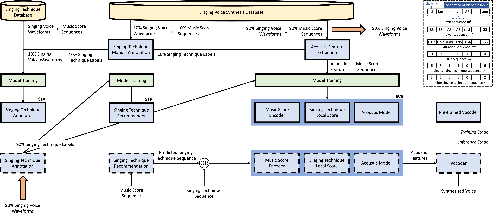
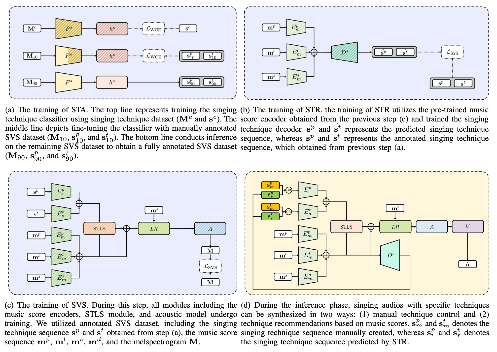
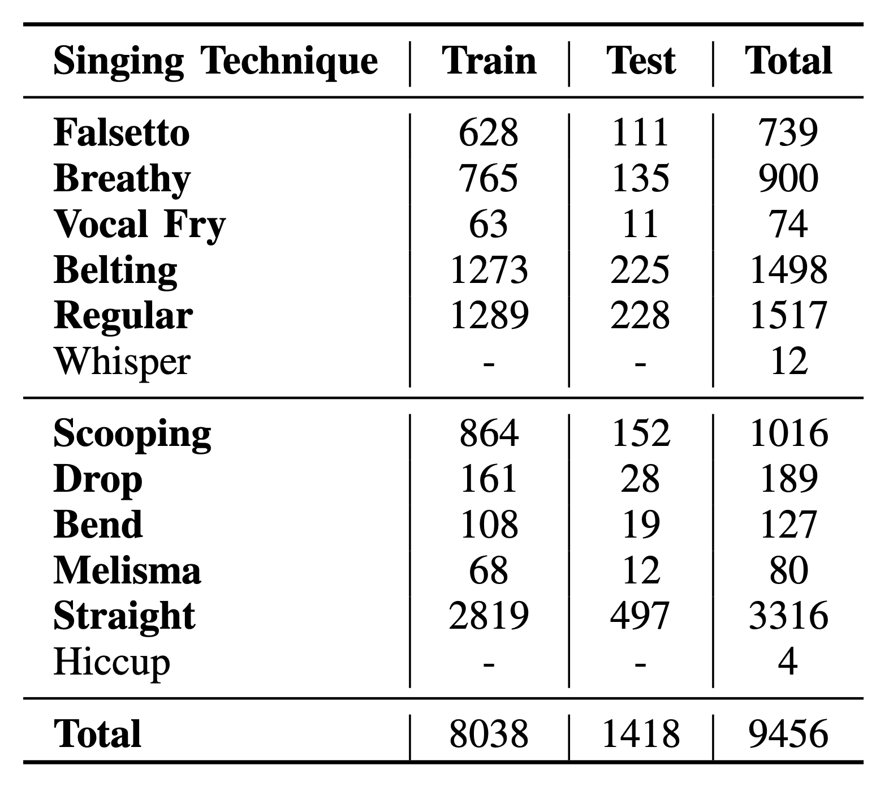
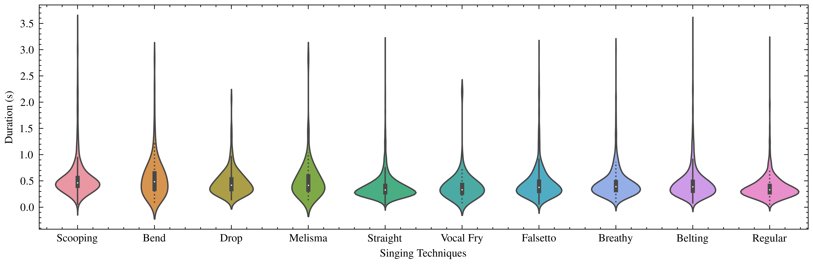

Closing the gap between synthesis and human expressivity
The precise control of singing techniques is of utmost importance in achieving emotionally expressive vocal performances. To bridge the gap between current Singing Voice Synthesis (SVS) systems and human singers, our paper focuses on developing an SVS system that allows for control over singing techniques.
We introduce SinTechSVS, a singing technique controllable SVS system composed of a singing technique annotator, a singing technique controllable synthesizer, and a singing technique recommender. Our approach leverages transfer learning for efficient singing technique annotation and adapts the DiffSinger framework with additional style encoders and an attention-based singing technique local score (STLS) module to enhance singing technique controllability. We also propose a Seq2Seq singing technique recommender for the new task of Singing Technique Recommendation (STR).
Experimental results demonstrate that SinTechSVS significantly improves the quality and expressiveness of synthesized vocal performances, with comparable general synthesis capabilities to state-of-the-art SVS systems and enhanced control over singing techniques, as evidenced by objective and subjective evaluations. To the best of our knowledge, SinTechSVS is the first SVS capable of controlling singing techniques.
Overall architecture
SinTechSVS consists of three key components: a singing technique annotator (STA), a singing voice synthesizer conditioned on singing techniques (SVS), and a singing technique recommender (STR). The "OR" symbol denotes that the SVS input is either a user-specified technique sequence or the predicted sequence from the STR.


Singing technique annotations
Samples of singing techniques manually annotated on the Opencpop dataset. In sentence-level samples, bolded syllables are sung in the specified technique.
Data acquirement and annotation statistics
Download the annotation file
The manual singing technique annotation file for the Opencpop dataset is available for direct download from the SinTechSVS annotation dataset on Hugging Face. The annotation is for research purposes only.
For the Opencpop dataset itself, please strictly follow the instructions at wenet.org.cn/opencpop — we have no right to grant access to it directly.
Usage requires
- Research purposes only
- Agreement to the license
Distribution of manually annotated Opencpop labels

"Whisper" and "hiccup" are removed due to the small amount of available labels.
Distribution of duration per technique

Synthesis with singing technique control
Synthesized samples conditioned on singing techniques. In the word-level lyric sequence, bolded syllables are sung in the specified technique. Regular / Straight denotes synthesis without any technique conditioning, serving as a reference for comparison.
Synthesis with singing technique recommendation
Synthesized samples conditioned on singing techniques recommended directly from the music score. STan denotes SinTechSVS using annotated (ground-truth) technique labels; SinTechSVS uses the STR module to predict techniques for the input.
Recommendation on unseen music scores
Technique recommendations and corresponding synthesis on previously unseen score samples. Pitch abbreviations: STR straight · SCO scooping · BEND bend · DROP drop · MEL melisma. Timbre abbreviations: REG regular · FRY vocal fry · FAL falsetto · BRE breathy · BEL belting. Word-level pitch, lyric, slur, and technique sequences are separated by "|".
Unseen Sample 1
Unseen Sample 2
Unseen Sample 3
Citation
If you use SinTechSVS in your research, please cite the IEEE/ACM Transactions on Audio, Speech, and Language Processing journal paper.
@article{zhao2024sintechsvs,
title={Sintechsvs: A singing technique controllable singing voice synthesis system},
author={Zhao, Junchuan and Chetwin, Low Qi Hong and Wang, Ye},
journal={IEEE/ACM Transactions on Audio, Speech, and Language Processing},
volume={32},
pages={2641--2653},
year={2024},
publisher={IEEE}
}
Contact and license
If you have any questions about the paper, please contact the first author Junchuan at junchuan@comp.nus.edu.sg.
- The singing technique annotation for Opencpop is available to download for non-commercial purposes under the Opencpop license.
- This annotation may not be sold, leased, published, or distributed to any third party without written permission from the administrator.
- The National University of Singapore is not responsible for errors in the annotation's content or any damages resulting from its use. The administrator may update these conditions of use at any time.